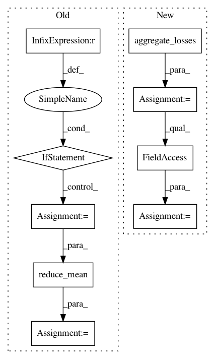

c30223ec80213014c53a011aef4a1c5cc95b86d7,tf_agents/agents/sac/sac_agent.py,SacAgent,actor_loss,#SacAgent#Any#Any#,471
Before Change
time_steps, self.time_step_spec, num_outer_dims=2):
// Sum over the time dimension.
actor_loss = tf.reduce_sum(input_tensor=actor_loss, axis=1)
if weights is not None:
actor_loss *= weights
actor_loss = tf.reduce_mean(input_tensor=actor_loss)
self._actor_loss_debug_summaries(actor_loss, actions, log_pi,
target_q_values, time_steps)
After Change
// Sum over the time dimension.
actor_loss = tf.reduce_sum(input_tensor=actor_loss, axis=1)
reg_loss = self._actor_network.losses if self._actor_network else None
agg_loss = common.aggregate_losses(
per_example_loss=actor_loss,
sample_weight=weights,
regularization_loss=reg_loss)
actor_loss = agg_loss.total_loss
self._actor_loss_debug_summaries(actor_loss, actions, log_pi,
target_q_values, time_steps)
return actor_loss
In pattern: SUPERPATTERN
Frequency: 3
Non-data size: 9
Instances
Project Name: tensorflow/agents
Commit Name: c30223ec80213014c53a011aef4a1c5cc95b86d7
Time: 2020-03-30
Author: sguada@google.com
File Name: tf_agents/agents/sac/sac_agent.py
Class Name: SacAgent
Method Name: actor_loss
Project Name: tensorflow/agents
Commit Name: aa3c6a5f79d82044306f3a11f1de6b7231163d90
Time: 2020-02-24
Author: sguada@google.com
File Name: tf_agents/agents/behavioral_cloning/behavioral_cloning_agent.py
Class Name: BehavioralCloningAgent
Method Name: _loss
Project Name: tensorflow/agents
Commit Name: c30223ec80213014c53a011aef4a1c5cc95b86d7
Time: 2020-03-30
Author: sguada@google.com
File Name: tf_agents/agents/sac/sac_agent.py
Class Name: SacAgent
Method Name: critic_loss